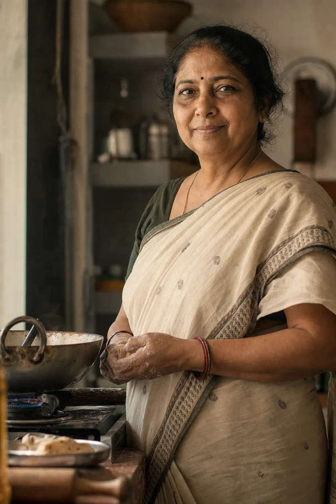

Bhajani chakli

seema v4 · unwind: loud · ui tokens + worlds · agent c
Six saturated color worlds, kinetic type at double scale, chunky chrome. Everything on this page ships in site/tokens.css and is driven by data-world attributes — this page itself flips worlds as you scroll.
The background is the narrative. Every world is the anchor's lighting — light edge upper-left, deep floor vignette — never a flat fill. Each card below is painted by its own data-world attribute; ink and accent come with it.
Turmeric Punch
Chili Slam
Curry Leaf
Roast Dark
Ghee Field
Milk Cream
the flip score — b0 → b10
Two stacked fixed layers behind everything; the incoming layer holds the next world's gradient and the motion agent lerps the custom prop --wl-o — compositor-only opacity, never a background-color tween. Ink swaps at flip midpoint. Try the four flip flavors.
The world flips.
haldiDisplay XXL runs opsz 144, wght 620, soft 60, wonk 1 at up to 16rem — allowed to touch both viewport edges. Every XXL headline renders three times: the fill plus two stroked echo clones in the world's accent, lagging by 0.06s and 0.12s. Words rise through overflow masks like letterpress slugs. Click any specimen to replay.
.t-xxl + .echo + .rise · per-word clip-mask rise, chili echo on turmeric
.t-xl · display l — b8 "seema", chapter kickers (she doesn't shout)
Before the city wakes.
the contrast joke · 16rem serif vs 13px mono
Nothing to hide.
04:30 — the kitchen is already awake
one scale-punch word per chapter · --ease-punch, 1.35 → 1
Rice, dal, butter, spice — and a woman who refuses to cut corners.
counting numerals · .t-num, snap 1, 0.9s — click to replay
b2 · counts up on scrub
04:30
b4 · zeros land one by one
0 palm oil · 0 preservatives · 0 colours · 0 machines
b9 · odometer to live batch
2926
devanagari accent · wordmark + b8 only
Seema सीमा
B3 grammar: each negation is a viewport-filling XXL wall in milk with ghee echo strokes, posters slapped over posters. Passed walls dim to 35 percent and scale to 0.9.
.pill · 2px ink border, 44px targets · .is-active inverts with a 1.06 pop
.btn · the cta slab — 64px, haldi fill, roast ink 9.3:1, solid offset shadow · .btn--ghost · .btn--dock
sticker energy · .u-sticker — solid offset drop shadow, never blur (b5 landings, cards)
B7: three full-viewport SKU panels, each a complete world. Below is the real component at demo scale — swipe or scroll it horizontally; snap points are native. On desktop the motion agent pins it and drives the travel instead, syncing the fixed world layers per panel.
Wordmark, breadcrumb, docked order slab, scroll cue — ink inherits from the html data-world mirror and swaps at flip midpoint. Same markup, two worlds.
B4 on the ghee field: momentum spin driven by scroll velocity through a lerp; pills counter-rotate level; the active pill inverts with the pop. The counting-zeros line runs above.
0 palm oil · 0 preservatives · 0 colours · 0 machines

.ledger · dotted leaders, full ink on any world
.stamp · b9, slaps at 2×, used once
batch 2926 · freshB8 is the only cream on the site, arriving on the slowest dissolve. No echo strokes, no parallax; grain may read here only. Display L — she doesn't shout.

Seema
सीमा